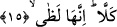

kurtarsın.
“Ve” insanlardan-cinlerden ve bütün yaratıklardan olmak üzere “yeryüzünde kim
varsa hepsini fedâ etmeyi ister, tâ ki kendisini kurtarsın.” Fedâ etmek demek, insanın
karşılığında bir şeyler vererek başına gelecek olan belâdan kendini kurtarması demektir.
“Men: Kim varsa” kelimesi tağlîb ifâde eder. “Sümme yüncîh” cümlesi yukarıda
geçen “yeftedî/fedâ eder” cümlesine mâtuftur. Buna göre âyetin mânâsı şöyle olur:
“Her günahkâr oğullarını, eşini ve yeryüzünde kim varsa hepsini fedâ etmek ister. Sonra
da yaptığı bu fedâkârlığın kendisini kurtarmasını temennî eder.”
“Sümme/sonra” kelimesi, kurtuluşun uzak bir ihtimal olduğunu vurgulamak için
getirilmiştir. Yâni o günahkâr kişi, bütün bu sayılan şeylerin elinin altında olmasını,
kendisi için onları fidye olarak verip o günün azâbından kurtulmayı ister. Fakat heyhat!..
Onun bu hareketinin kendini kurtarması ne kadar uzak bir ihtimaldir!
Bu âyet-i kerîme, nefsin boyasıyla boyanmış ruh mücrimine işâret etmektedir. Çünkü o
firâk ve ihticâb gününün azâbının korkunçluğundan kurtulmak için kalb oğullarını ve
sıfatlarını, nefis zevcesini, sır kardeşini ve kabilesini yâni kendine tâbi olanları, kendi
yanında yer alanları ve kendi insanlığının arzında ne varsa tüm rûhânî ve cismânî
güçleri fedâ etmeyi sonra da bu hareketinin kendini kurtarmasını temennî eder. Fakat
istidâdının bozuk ve vaktin geçmiş olması sebebiyle yapacağı bu fedâkârlık kendini
kurtarmaz.
15. Fakat ne mümkün! Bilinmeli ki, o (cehennem) alevlenen bir ateştir.
“Kella” kelimesi, o günahkâr kimseyi, sevgi ve merhamet ümîd etmekten engellemek
ve her şeyi fidye olarak verebilse bile bunun kendisini kurtarmayacağını açıkça beyân
etmek içindir. Yâni onun temennî ettiği gibi olmayacaktır. Çünkü o, günah işlemekten
dolayı meydana gelen zulmânî yapısı ile azâba lâyık olmuştur, o azaptan kurtulacak
değildir. Bir hadis-i şerifte şöyle buyrulur: “Allah Teâlâ Kıyâmet günü Cehennem
ehlinin azâbı en hafif olanına: «Ne dersin, şu anda dünya dolusu altının olsa, onları
(şu azaptan kurtulmak için) fidye olarak verir miydin?»[94] diye sorar. Kâfir: «Evet!»
der. Bunun üzerine ona: «Sen Âdem’in sulbünde iken Ben senden bundan daha hafif
bir şey istemiştim; o da Bana hiçbir şeyi şirk koşmaman idi.” [95]
Kurtubî’den şöyle nakledilir: “Kellâ” kelimesi, caydırma anlamına geldiği gibi
“hakkan: gerçekten” mânâsına da gelir. Burada her iki yön de mümkündür. İkinci takdire
göre cümle “yüncîhi” ifâdesinde biter ve o kelime üzerinde vakıf yapılır. Buna göre
“kellâ”, “yüncîhi” kelimesini izleyen ikinci cümle olmuş olur. Ancak tahkik ehli âlimler
“kellâ”nın birinci takdîre uygun olduğunu söylüyorlar. İşte bundan dolayı İmam
Secâvendî “kellâ” kelimesi üzerine vakf-ı mutlak işâreti koymuştur.